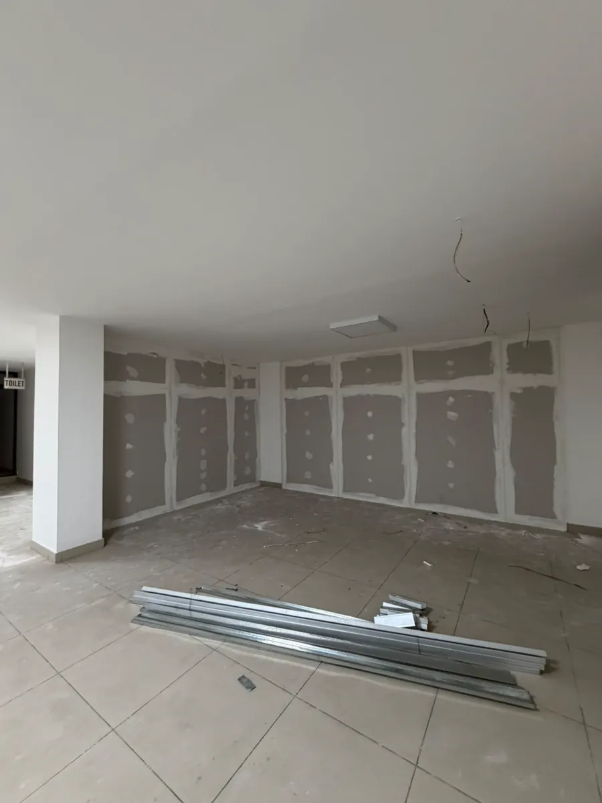
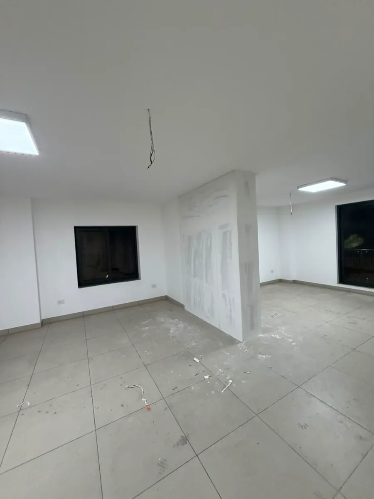
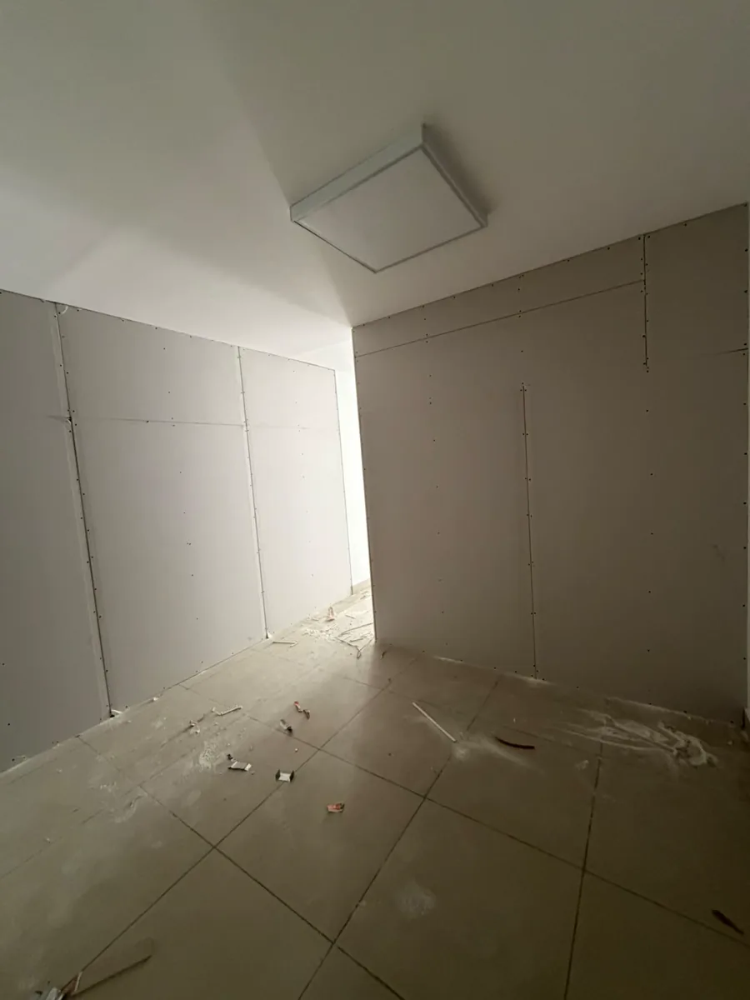
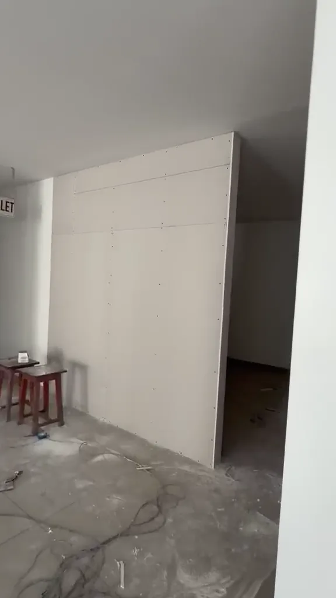
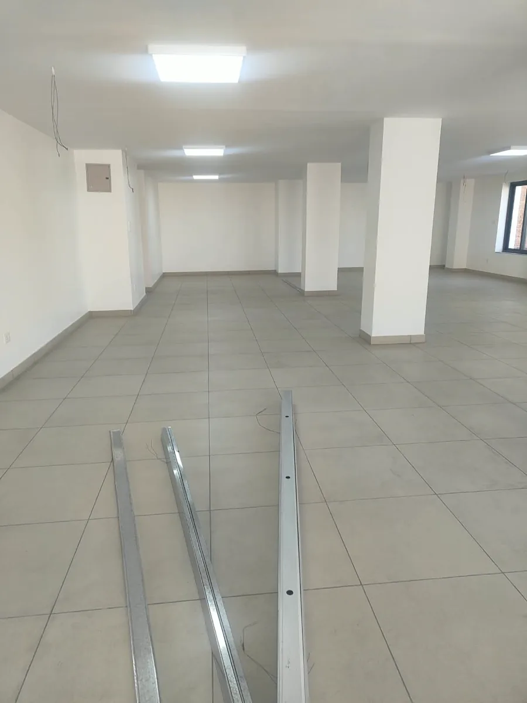
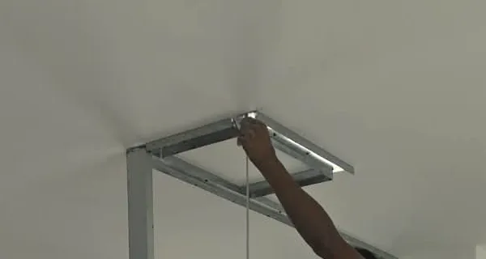

Reception gypsum partition
- Planned area
- 62.253 sq ft
- Installed area
- Awaiting measurement
Paila Pilates
The latest site report, next actions and work tracker.
Latest site report 9 November 2026 · Progress sheet through 8 November 2026
Drive site report
The site note reports that work continued. Photos and video show compound along board joints and on some wall faces.
Drive evidence · 1 note · 9 images · 1 video
Suggested for the next site check
Confirm which views belong to Works 05 and 12, then enter the dated stage and evidence link in the Progress sheet.
Check boarded faces and record installed square feet against the 62.253 sq ft plan. Note any finishing still to do.
Verify the estimated 110.5 sq ft addition and NPR 55,250 cost. Record the owner’s decision and the agreed scope.
Assign an owner and target date to each action. Record blockers and decisions in the Progress sheet.
Each cell shows the stage recorded for that work item on that date.
| Work item | |||
|---|---|---|---|
| Work 05Reception gypsum partition | Framing started | Frame installed | No stage recorded |
| Work 12gypsum partition | No stage recorded | Frame installed | No stage recorded |
The bars count entries by status for each date recorded in the sheet.
Each caption explains what the image shows. Open a thumbnail for a larger view.

Shows compound along board joints and screw heads.

Shows the coating on one partition face in its room context.

Gypsum boards are fixed to the visible faces.

A second view of the boarding from the site walkthrough.

Partition materials were unloaded on the first day.

Work 05 framing being fitted at ceiling level.
Progress sheet
Work 05 framing installed.
Framing installed.
Estimated scope increase of 110.5 sq ft at NPR 500 per sq ft, about NPR 55,250.Drive evidence · 1 note · 3 images · 1 video
Progress sheet
Opening pooja completed at the studio entrance.
Materials for the reception partition were unloaded on site.
Work 05 started. Metal studs and ceiling track were being fitted.
Drive evidence · 1 note · 4 images · 1 video